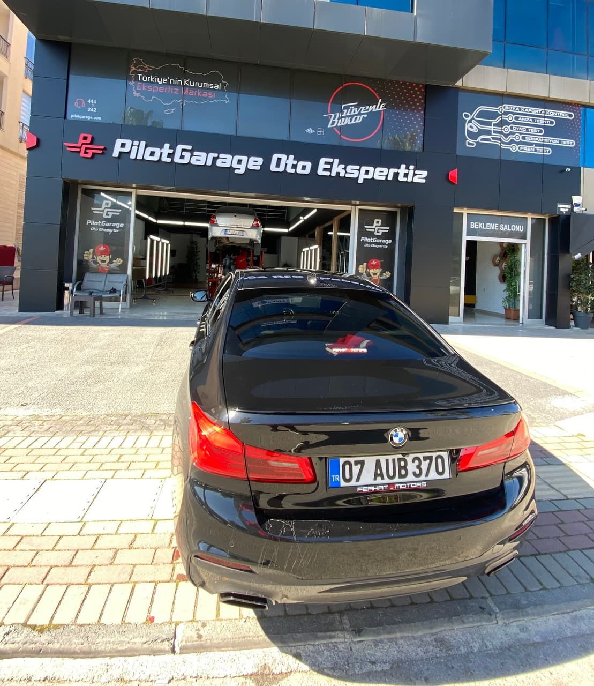
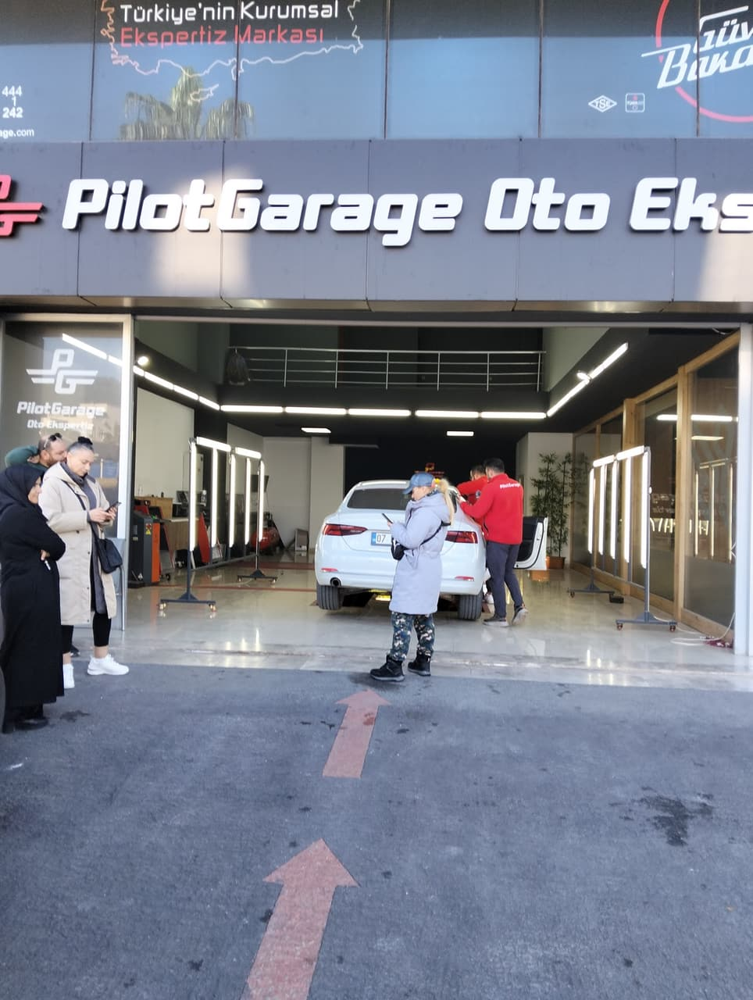
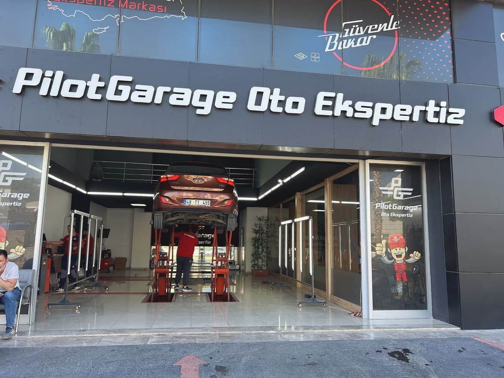
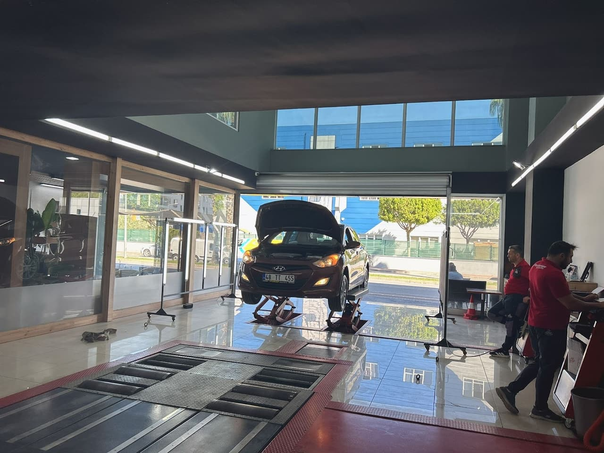

İkinci el araç alım sürecinizde aklınızda soru işareti kalmaması için profesyonel ekibimizle yanınızdayız. TSE ve TÜV belgeli standartlarda, aracın tüm detaylarını şeffaflıkla inceliyoruz.



İlgilendiğiniz hizmetleri işaretleyin, kapsam ve fiyatı tek mesajla WhatsApp'tan sorun.
Paket içerikleri ve fiyatları işletme tarafından bildirilir. Hizmet listesi işletmenin kendi web sitesinden alınmıştır.
Hizmeti, aracınızı ve size uygun zamanı seçin; mesaj WhatsApp'a hazırlanır. Randevu, işletmenin teyidiyle kesinleşir. Çalışma saatleri: Pzt–Cmt 07:30–18:00 · Paz kapalı.
Ekspertizden önce satıcıya sorun; cevapları işaretleyip listeyi kopyalayın.

Kadir Bey ve ekibi, aracın en ince detayına kadar titizlikle kontrol ederek gözden kaçabilecek noktaları raporluyor.
Ekspertiz sonrası tüm bulgular, teknik terimlerden arındırılarak sade ve net bir şekilde size anlatılıyor.
İş disipliniyle hareket eden ekibimiz, kısa sürede güvenilir ve kapsamlı bir hizmet sunmayı amaçlıyor.
İşlemleriniz devam ederken konforlu alanımızda ağırlanıyor, sürecin her aşamasında güler yüzle karşılanıyorsunuz.
📍 Aydınevler Mahallesi Hasan Ali Yücel Caddesi Numara:2, Aydınevler, 07600 Manavgat/Antalya
🕑 Pzt–Cmt 07:30–18:00 · Paz kapalı
360° GÖRÜNÜM
Görüntüyü fareyle ya da parmağınızla çevirin; bulunduğumuz sokağı ve girişimizi 360° gezin, gelirken zorlanmayın.
Görüntü: Google Street View · Yol tarifi al